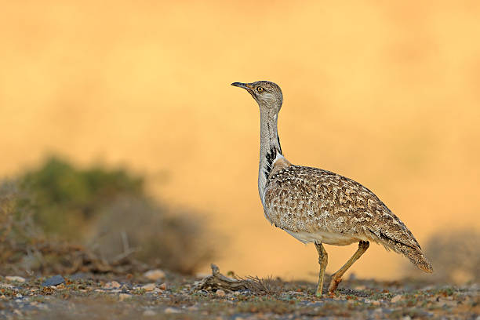

Articles
|  |
Great Indian BustardThe Great Indian Bustard is a most endangered species of bird found only in India and adjoining region. Bustard is one of the largest flying species of bird with weight up to 15 kg and about 1 m tall from the ground. The largest land bird habitat in the scrub, tall grass, semi-arid grasslands and semi desert regions of Rajasthan. Due to heavily hunting and habitat loss, the bird is disappearing from the many regions of India. It’s state bird of Rajasthan. There is a wildlife sanctuary called Great Indian Bustard Sanctuary at Solapur, Maharashtra. |
Spoon Billed SandpiperSpoon Billed Sandpiper is the world’s most threatened bird species and fall in the category of critically endangered in India too. Extremely small population, habitat loss and loss of breeding grounds takes spoon-billed sandpiper chicks on the verge of extinction. Main grounds in India are Sundervan delta and neighbouring countries. |

|

|
The Bengal FloricanThe Bengal Florican is the rare species of bustard family and native to Indian Subcontinent only. Bengal Florican is one of the most threatened species and almost extinct at other place of world, less than 1,000 only young Bengal Floricans are disturbed in the Indian Subcontinent. It’s the world’s rarest bustard but Poaching and land conversion for agriculture took its habitat and tagged it as endangered species. |
Sociable LapwingSociable Lapwing is a migratory bird from open grassland of Kazakhstan and found only in the north-west region of India. The medium sized lapwing is very attractive with longish black legs,dark belly and a short black bill. Habitat destruction is the main reason of for this species to put in the list of endangered birds. |

|